国王集市 2026：普雷瓦利亚商人商品 King's Faire 2026 · Prevalian Merchant Items
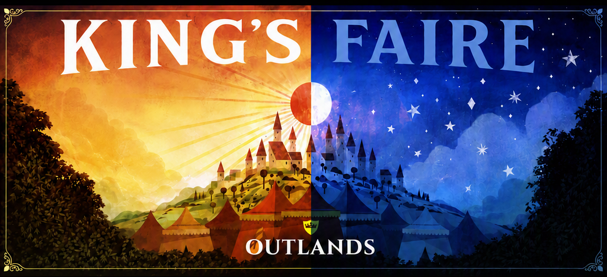
译自官方论坛活动帖：King's Faire 2026: Prevalian Merchant Items（普雷瓦利亚商人商品预告）。
说明：本页为活动/物品上新预告的汉化整理，专有名词首次出现标注英文；图片除特别注明外均抓自官方论坛附件，随页面一并托管。2025 年「最后机会」旧物预览图已补全并随页面本地托管。
温馨提示：在 2025 国王集市「永不返场」商品彻底下架之前，记得回头补齐。
一、2026 限定色相：微光闪耀 Shimmer Flare（Hue 1694）
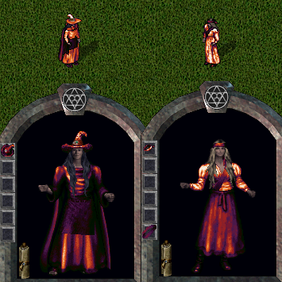
「微光闪耀 Shimmer Flare」是一套限定色相，玩家可购买多种该色相的商品；此色相永不返场。可染成「微光闪耀（Hue 1694）」的商品清单：
- 布料 Cloth
- 背包染料 Backpack Dye
- 染发剂 Hair Dye
- 染须剂 Facial Hair Dye
- 家具染料 Furniture Dye
- 头饰染料 Headwear Dye
- 灯笼 Lantern
- 符文书染料 Runebook Dye
- 饰品染料 Accessory Dye
- 地毯染料 Carpet Dye
- 纹身染料 Tattoo Dye
- 柔草叶 Melloweed Leaves
- 饮具补充 Drinking Vessel Refill
- 坐骑装备染料 Mount Gear Dye
- 精通链染料 Mastery Chain Dye
- 法术色相集 Spell Hue Collection
- 船漆 Ship Paint
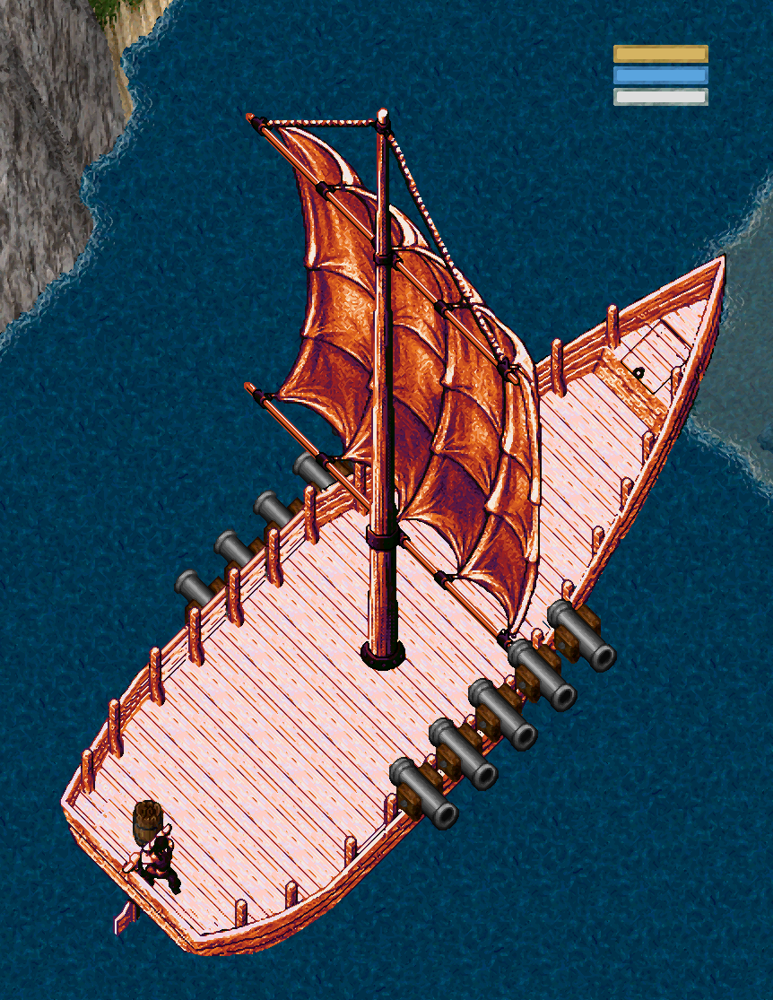
二、2026 季节服饰：月相系列 Lunar Wearables
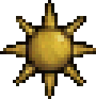
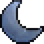
国王集市 2026 季节穿戴物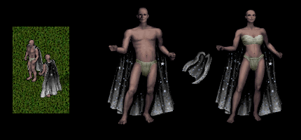
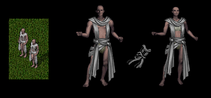
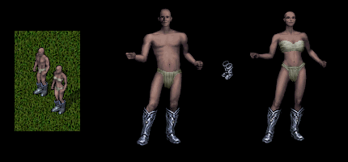
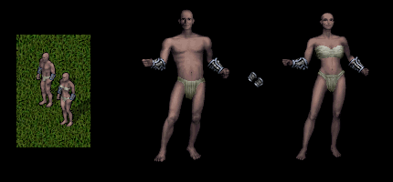
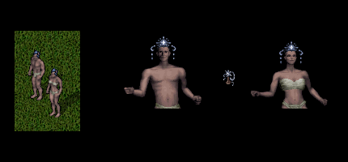
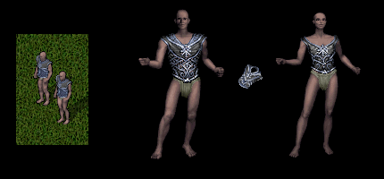
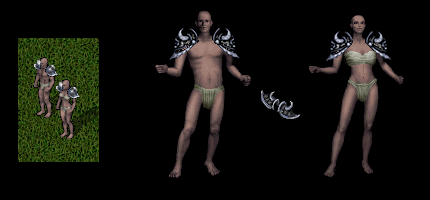
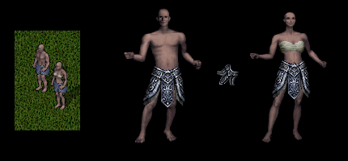
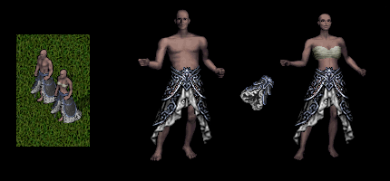
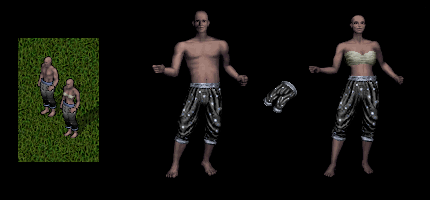
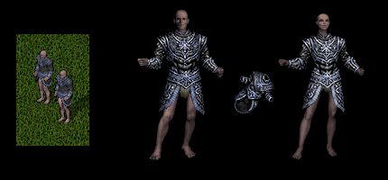
三、2026 季节装饰 Seasonal Decorations
国王集市 2026 季节装饰
海报与地毯
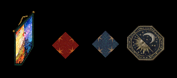
- 国王集市 2026 海报 King's Faire 2026 Poster
- 红星地毯 Red Star Carpet（可用地毯染料染色）
- 蓝星地毯 Blue Star Carpet（可用地毯染料染色）
- 月相小地毯 Lunar Rug
灯具与挂毯
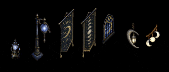
- 以太灯笼 Aetherium Lantern（动画·彩色光源）
- 以太灯柱 Aetherium Lamp Post（动画·彩色光源）
- 月相挂毯 Lunar Tapestry
- 月相相位挂毯 Moon Phase Tapestry
- 星空窗 Starry Night Window（动画）
- 悬挂新月灯笼 Hanging Crescent Lantern（动画·光源）
- 月相灯笼 Moon Lanterns（动画·光源）
桌椅与泉池
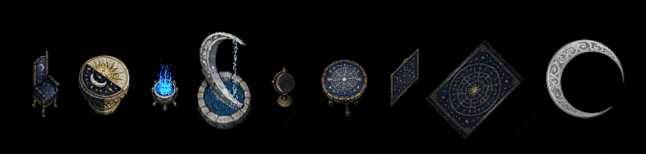
- 月椅 Moon Chair
- 昼夜桌 Night and Day Table
- 月火盆 Moonfire Brazier（动画·彩色光源）
- 月泉 Moon Fountain（动画·水源）
- 月之球 Moon Globe（动画）
- 星图桌 Star Chart Table
- 星图画作 Star Chart Painting
- 星图地毯 Star Chart Area Rug
- 月相小地毯 Lunar Rug（可用家具染料染色）
雕塑与织机
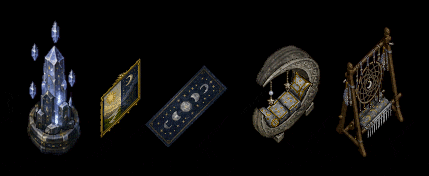
- 浮空水晶碑 Floating Crystal Monolith（动画·彩色光源）
- 昼夜画 Night and Day Painting
- 月相长条毯 Moon Phase Runner
- 新月躺椅 Crescent Moon Chaise（可用家具染料染色）
- 织梦织机 Dreamweaver Loom（可用家具染料染色）
屏风
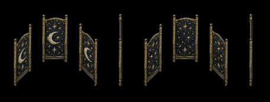
- 天界屏风 Celestial Room Divider（多种样式）
杂耍道具
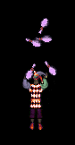
- 杂耍钉 Juggling Pins（新增 NEW）
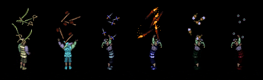
- 杂耍军刀 Juggling Sabres
- 杂耍斧 Juggling Hatchets
- 杂耍匕首 Juggling Daggers
- 杂耍火把 Juggling Torches
- 杂耍瓶 Juggling Bottles
- 杂耍球 Juggling Balls
奇物染料 Curio Dyes
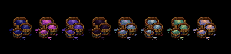
- 微光至日奇物染料 Shimmer Solstice Curio Dye
- 微光大丽花奇物染料 Shimmer Dahlia Curio Dye
- 微光盛会奇物染料 Shimmer Gala Curio Dye
- 微光黄昏奇物染料 Shimmer Nightfall Curio Dye
- 微光海市蜃楼奇物染料 Shimmer Mirage Curio Dye
- 微光彗星奇物染料 Shimmer Comet Curio Dye
- 微光翠绿奇物染料 Shimmer Viridian Curio Dye
- 微光暮色奇物染料 Shimmer Dusk Curio Dye
四、刮刮乐奖券奖品 Scratch Ticket Prizes
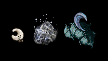
- 月相抱枕 Moon Throw Pillow
- 月之碎片 Moon Fragment
- 月云毛绒 Moon Cloud Plushy
五、最后机会：2025 季节服饰（LAST CHANCE）
以下为 2025 国王集市「永不返场」商品的最后上架机会；预览图已随本 wiki 本地托管（仅「挂角」一张原图暂缺，沿用 imgur 原链）。
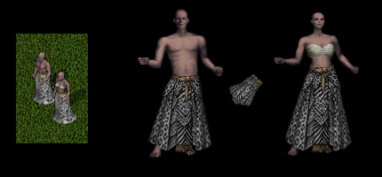
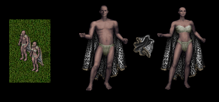
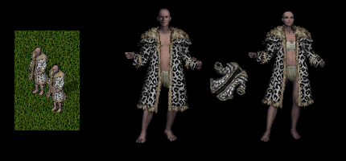
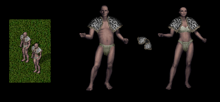
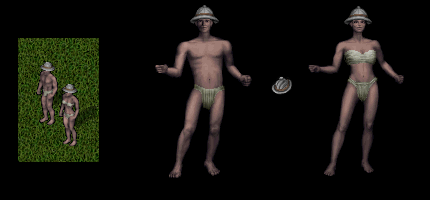
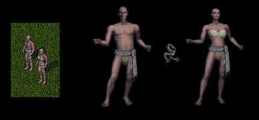
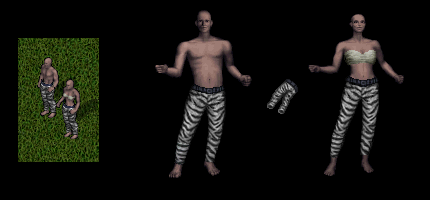
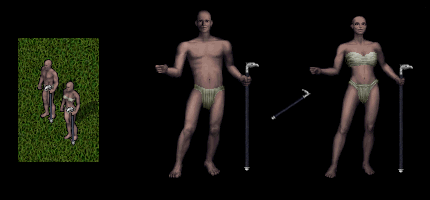
六、最后机会：2025 季节装饰（LAST CHANCE）
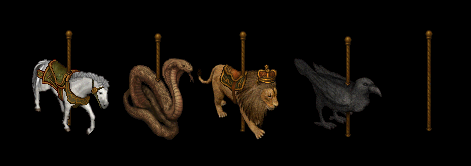
- 白马旋转木马雕像 White Horse Carousel Figure
- 眼镜蛇旋转木马雕像 Cobra Carousel Figure
- 狮旋转木马雕像 Lion Carousel Figure
- 乌鸦旋转木马雕像 Raven Carousel Figure
- 旋转木马柱 Carousel Pole
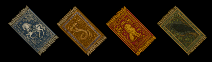
- 安达利亚马地毯 Andaria Horse Rug
- 寒武眼镜蛇地毯 Cambrian Cobra Rug
- 普雷瓦利亚狮地毯 Prevalian Lion Rug
- 泰拉乌鸦地毯 Terran Raven Rug
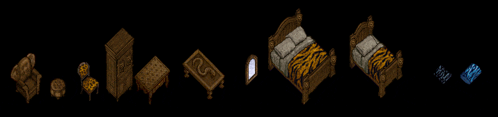
- 象耳扶手椅 Elephant Ear Armchair
- 皮凳 Leather Stool
- 猎豹纹椅 Cheetah Print Chair
- 狮头衣柜 Lionshead Armoire
- 花纹边桌 Patterned Side Table
- 雕蛇桌 Carved Snake Table
- 旅行镜 Travel Mirror
- 大虎纹床 Large Tiger Print Bed
- 小虎纹床 Small Tiger Print Bed
- 虎纹折叠毯 Tiger Stripe Folded Blanket（随机色相）
- 虎纹枕 Tiger Stripe Pillow（随机色相）
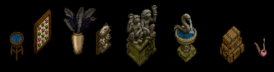
- 立式水盆 Upright Water Basin（水源）
- 甲虫收藏 Beetle Collection（随机色相）
- 鸵羽花瓶 Ostrich Feather Vase（随机色相）
- 骷髅奇物架 Skull Curio Shelf
- 双猴雕像 Two Monkey Statue
- 蛇泉 Snake Fountain（动画·水源）
- 堆叠旅行箱 Stacked Travel Trunks
- 冒烟装饰烟斗 Smoking Decorative Pipe（随机色相）
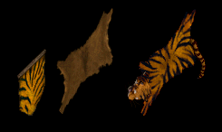
- 挂虎纹 Mounted Tiger Print
- 挂兽皮 Mounted Animal Skin
- 挂虎皮 Mounted Tiger Pelt

- 挂角 Mounted Horns（多种外观样式）
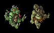
- 蜥蜴人毛绒 Lizardman Plushie
- 食人魔毛绒 Ogre Plushie
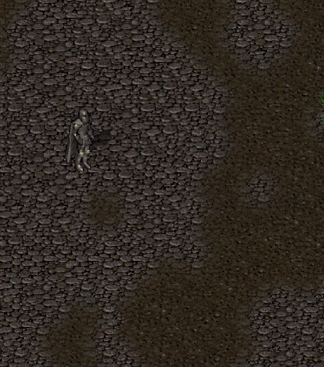
- 纸飞机 Paper Airplane
（译文完）